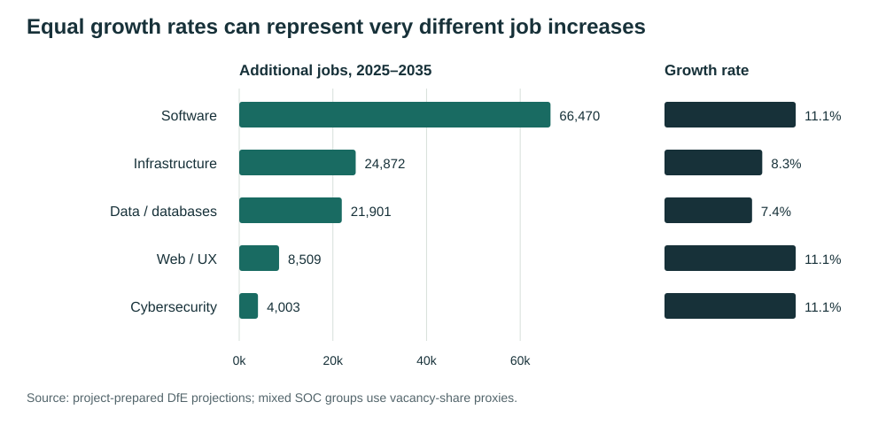
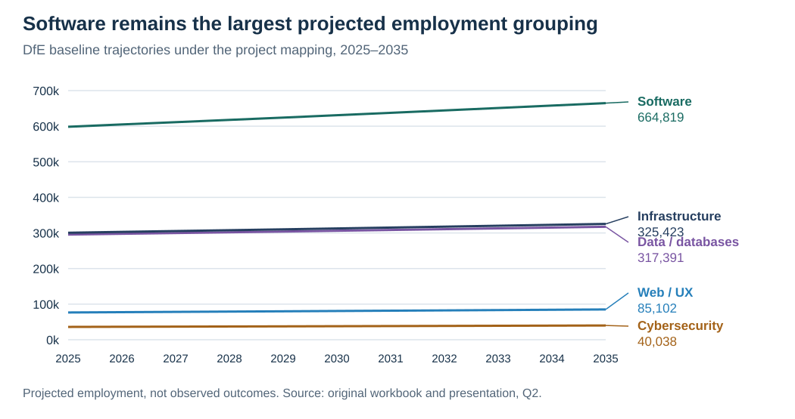
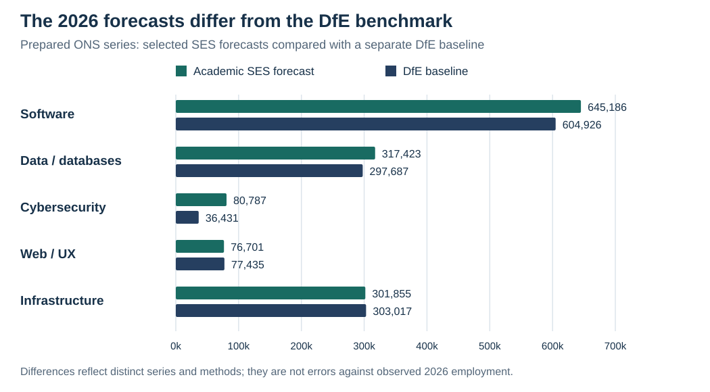
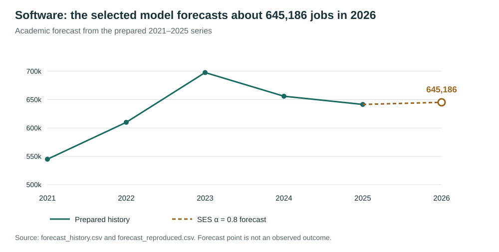
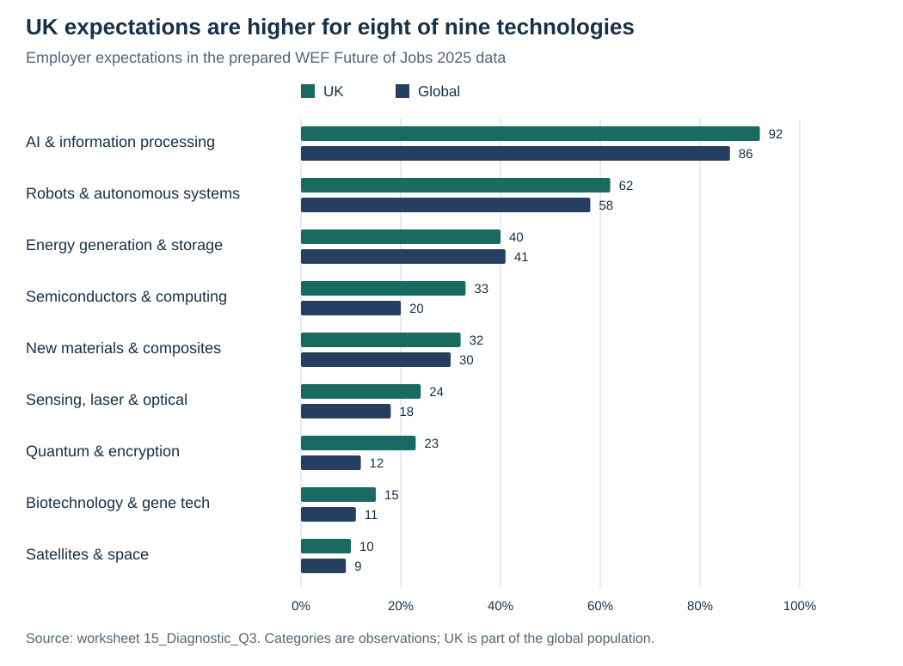
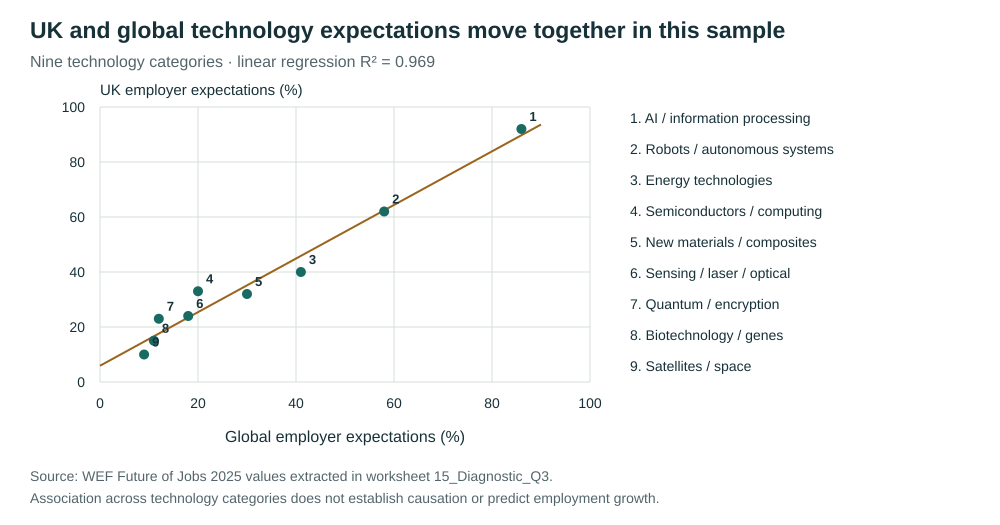
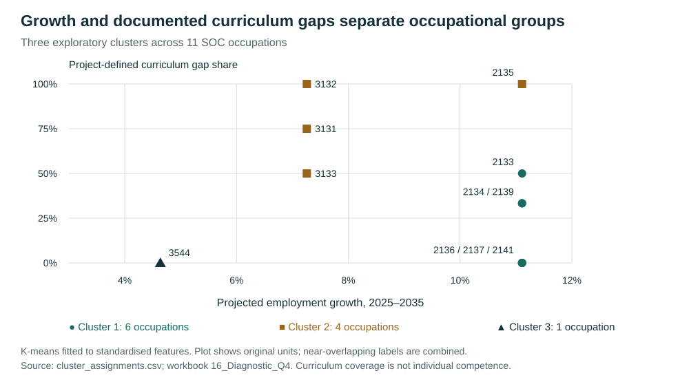

Academic case study · Excel & Python
UK Computing
Career Outlook
Employment trends, forecasting and curriculum alignment: investigating five career areas through public data and an explicit occupational mapping.
The question
How do computing career areas compare in employment scale and projected growth, and how does documented course coverage align with the occupations behind them?
The project combines group research with my individual Future Growth analysis. It examines Software, Data, Cybersecurity, Web/UX and Infrastructure, using employment statistics, projections and employer expectations.
Making different sources comparable
The sources describe different things: historical employment, projected employment, employer expectations and documented curriculum coverage. I kept those meanings distinct when interpreting the results.
| Source in the project | Purpose | Preparation / interpretation |
|---|---|---|
| ONS Annual Population Survey | Prepared annual history, 2021–2025 | Career-area series used for the forecasting exercise. |
| DfE employment projections | Compare the 2025 and 2035 employment levels | SOC occupations mapped into five career areas; also used as a separate forecast benchmark. |
| WEF Future of Jobs 2025 | Compare UK and global technology expectations | Nine technology categories, expressed as percentages. |
| Course brochure, 2024/25 | Evaluate documented curriculum coverage | Foundation and Years 1–3 considered, including future study. |
| Selected Adzuna vacancy-search counts | Approximate shares for mixed SOC groups | Search-count proportions used as allocation proxies; collection date was not recovered. |
The classification challenge
Some SOC groups span several career areas. I worked with a teammate to investigate extended occupational descriptions and develop a proportional allocation using selected vacancy-search counts. For example, the prepared allocation for SOC 2133 uses 64.5% Data, 29.9% Infrastructure and 5.6% mixed roles.
These shares are project assumptions, not official employment weights. Search counts may overlap and depend on wording and collection date. The source-to-workbook extraction has not been fully independently reproduced; the available verification starts from prepared project inputs.
Which career areas show the strongest projected growth?
Software has the largest absolute projected increase under the project mapping. Cybersecurity and Web/UX have similar percentage growth, but smaller employment bases.
Approximately 66,470 additional software jobs are projected between 2025 and 2035, compared with approximately 4,003 in Cybersecurity. Both grow by about 11.1%.

Open full-size chart (new tab)
View exact growth figures
| Career area | 2025 | 2035 | Additional jobs | Growth |
|---|---|---|---|---|
| Software Development & Testing | 598,349 | 664,819 | 66,470 | 11.11% |
| Cybersecurity | 36,035 | 40,038 | 4,003 | 11.11% |
| Web, Applications & UX/UI | 76,593 | 85,102 | 8,509 | 11.11% |
| IT Infrastructure, Networks & Support | 300,551 | 325,423 | 24,872 | 8.28% |
| Data, Analytics & Databases | 295,490 | 317,391 | 21,901 | 7.41% |
What I learned: a percentage ranking alone can hide large differences in scale. Showing both measures makes the comparison more useful for discussing career areas.
How do employment trajectories and forecasts differ?
The DfE trajectories show projected scale across five career areas. The separate ONS-based exercise asks how a short historical series supports a forecast for 2026.

Open full-size chart (new tab)
Forecasts compared with a separate benchmark

Open full-size chart (new tab)
Cybersecurity has the largest relative divergence: approximately 80,787 in the academic forecast versus 36,431 in the DfE baseline. This calls for investigation of the series, mapping and model assumptions; it does not establish which figure will be realised.
How I selected the forecasting methods
I compared a two-year moving average with simple exponential smoothing (SES) at α = 0.2, 0.5 and 0.8. Each method was evaluated against the same 2023–2025 observations using mean squared error (MSE). SES was initialised from the 2021 observation.
MSE is the average squared prediction error. Lower values indicate a closer fit during this evaluation period. Comparisons are made within each career area; the raw MSE values are affected by the scale of each series.
SES α = 0.8 had the lowest MSE for four areas. Web/UX favoured α = 0.2, showing that the same smoothing choice did not suit every series.
| Area | Lowest-MSE method | 2026 forecast | MSE, 2023–2025 |
|---|---|---|---|
| Software | SES α=0.8 | 645,186 | 3,658,756,019 |
| Data | SES α=0.8 | 317,423 | 260,138,344 |
| Cybersecurity | SES α=0.8 | 80,787 | 345,803,831 |
| Web/UX | SES α=0.2 | 76,701 | 104,794,503 |
| Infrastructure | SES α=0.8 | 301,855 | 498,766,849 |
Forecasting method example: Software

Open full-size chart (new tab)
Software history and forecast
| Year | Employment estimate / forecast | Status |
|---|---|---|
| 2021 | 544,841 | Prepared historical estimate |
| 2022 | 609,899 | Prepared historical estimate |
| 2023 | 697,665 | Prepared historical estimate |
| 2024 | 655,901 | Prepared historical estimate |
| 2025 | 641,427 | Prepared historical estimate |
| 2026 | 645,186 | Academic SES forecast |
Compare all four methods
| Area | 2-year MA | SES α=0.2 | SES α=0.5 | SES α=0.8 |
|---|---|---|---|---|
| Software | 5,241,783,594 | 8,729,836,404 | 4,945,554,049 | 3,658,756,019 |
| Data | 294,266,077 | 656,824,748 | 363,325,562 | 260,138,344 |
| Cybersecurity | 500,208,616 | 1,286,414,009 | 637,720,091 | 345,803,831 |
| Web/UX | 174,100,834 | 104,794,503 | 139,811,136 | 180,021,518 |
| Infrastructure | 662,423,503 | 666,569,578 | 526,818,814 | 498,766,849 |
This is the assessment’s historical forecast exercise, not a newly issued forecast. Three evaluation years provide limited evidence of future performance, and the methods were selected on that same period. The separate comparison with DfE measures benchmark divergence, not error against a realised 2026 outcome.
What I learned: model selection should be explained through a consistent comparison, with the evaluation window and assumptions visible.
Do UK and global technology expectations align?
The category comparison shows where expectations differ. AI and information processing is highest in both series: 92% in the UK and 86% globally.

Open full-size chart (new tab)
The relationship across categories
I examined the relationship between the UK and global percentages for nine technology categories in the WEF data. The fitted relationship has a correlation of approximately 0.985 and R² of approximately 0.969.

Open full-size chart (new tab)
View technology percentages
| Technology | UK (%) | Global (%) |
|---|---|---|
| AI and information processing technologies | 92 | 86 |
| Robots and autonomous systems | 62 | 58 |
| Energy generation, storage and distribution | 40 | 41 |
| Semiconductors and computing technologies | 33 | 20 |
| New materials and composites | 32 | 30 |
| Sensing, laser and optical technologies | 24 | 18 |
| Quantum and encryption | 23 | 12 |
| Biotechnology and gene technologies | 15 | 11 |
| Satellites and space technologies | 10 | 9 |
The high R² describes how closely these nine points follow the fitted line. It does not show that technology expectations cause job growth, establish that the UK and global values are independent, or demonstrate performance on new observations.
What I learned: a strong statistical association still needs a clear explanation of the variables, sample and limits.
How does projected growth relate to curriculum coverage?
I used K-means to explore 11 SOC occupations using standardised projected growth and a project-defined curriculum gap share. I compared k = 2, 3 and 4, retaining the random seed and initialisation settings for reproducibility.
The gap share is (Limited + No Clear Evidence) ÷ all assessable classifications. N/A items are excluded. It describes evidence in the course brochure, including future years of study; it does not measure my current skills or graduate competence.
| Clusters (k) | Silhouette | Cluster sizes |
|---|---|---|
| 2 | 0.477 | [7, 4] |
| 3 | 0.504 | [6, 4, 1] |
| 4 | 0.484 | [6, 1, 1, 3] |

Open full-size chart (new tab)
Reference lines show the unweighted means across the 11 SOC occupations: growth 9.47% (blue) and curriculum gap share 40.15% (purple). They are not cluster boundaries.
Career-area key for the SOC labels
The plot labels use SOC occupation codes. This key reproduces the career-area grouping shown in the assessment presentation.
| Career area | SOC codes |
|---|---|
| Software Development & Testing | 2134, 2136, 2139 |
| Data, Analytics & Databases | 3544, 3133, 2133 |
| Cybersecurity | 2135 |
| Web, Applications & UX/UI | 2141, 2139 |
| IT Infrastructure, Networks & Support | 2137, 3131, 3132 |
Career areas and clusters are different groupings. SOC 2133 and 2139 contain mixed roles; the employment mapping uses proportional allocations described in Data preparation. This presentation key is not a complete allocation matrix, and each SOC occupation appears only once in the cluster analysis.
Cluster 1 · 6 occupations: higher projected growth and a lower-to-moderate documented gap.
Cluster 2 · 4 occupations: higher documented gaps across mixed growth rates.
Cluster 3 · 1 occupation: lower relative growth and no gap in the assessed items.
View all 11 occupations
| SOC | Occupation | Growth | Gap share | Cluster |
|---|---|---|---|---|
| 2133 | IT business analysts, architects and systems designers | 11.11% | 50.0% | 1 |
| 2134 | Programmers and software development professionals | 11.11% | 33.3% | 1 |
| 2135 | Cyber security professionals | 11.11% | 100.0% | 2 |
| 2136 | IT quality and testing professionals | 11.11% | 0.0% | 1 |
| 2137 | IT network professionals | 11.11% | 0.0% | 1 |
| 2139 | Information technology professionals n.e.c. | 11.11% | 33.3% | 1 |
| 2141 | Web design professionals | 11.11% | 0.0% | 1 |
| 3131 | IT operations technicians | 7.26% | 75.0% | 2 |
| 3132 | IT user support technicians | 7.26% | 100.0% | 2 |
| 3133 | Database administrators and web content technicians | 7.26% | 50.0% | 2 |
| 3544 | Data analysts | 4.64% | 0.0% | 3 |
The three-cluster solution had the highest silhouette score among the tested configurations, approximately 0.504. Its groups contain six, four and one occupation.
Cybersecurity was classified with a 100% gap share across four assessable items. This means those items were coded as Limited or No Clear Evidence in the reviewed brochure; it does not establish that the course teaches no cybersecurity.
The classification involves qualitative judgment. Small and unequal item counts, eleven occupations and a singleton cluster make this analysis exploratory. No independent assessor-agreement check is documented.
What I learned: clustering can organise patterns for investigation, but the meaning of a cluster depends on how its inputs were constructed.
Explore the Excel workbook
Explore the data preparation, formulas, forecasting comparisons and charts behind this case study.
Start with Table_of_Contents_&_Acronym or 19_Visual_Summary. Open the downloaded file in Excel to explore the worksheets, formulas and charts.
My contribution
I worked with a teammate to investigate mismatches between SOC occupational classifications and the project’s career areas. I researched extended occupational descriptions and helped develop the proportional allocation for mixed groups using vacancy-search shares as proxies.
For my individual Future Growth analysis, I compared forecasting methods using MSE over a common evaluation period, examined the technology-expectation relationship through regression, and compared K-means configurations. The wider research and curriculum context came from the group project.
What was checked during portfolio preparation
Existing verification records confirm growth arithmetic, regression coefficients, all 20 recorded MSE values, five model selections and forecasts, and reproduced cluster membership. They also record agreement for eleven curriculum count rows and gap fractions. These checks validate downstream calculations against prepared inputs; they are not a full audit of the original source extraction.
Explore the evidence
- Project repository
- Methodology and provenance
- Forecasting reproduction code
- Clustering reproduction code
- DfE trajectories (CSV)
- Forecast benchmark (CSV)
- Growth data (CSV)
- Model comparison (CSV)
- Technology expectations (CSV)
- Cluster assignments (CSV)
The CSV downloads are prepared project extracts. The complete Excel workbook is available in the supporting evidence section above. Displayed counts are rounded; the CSV files retain the underlying precision. AI tools supported troubleshooting and portfolio documentation.
Explore the rest of my work
SQL analysis and database integrity, Python review analysis, and a database-driven web application.
Back to all projects